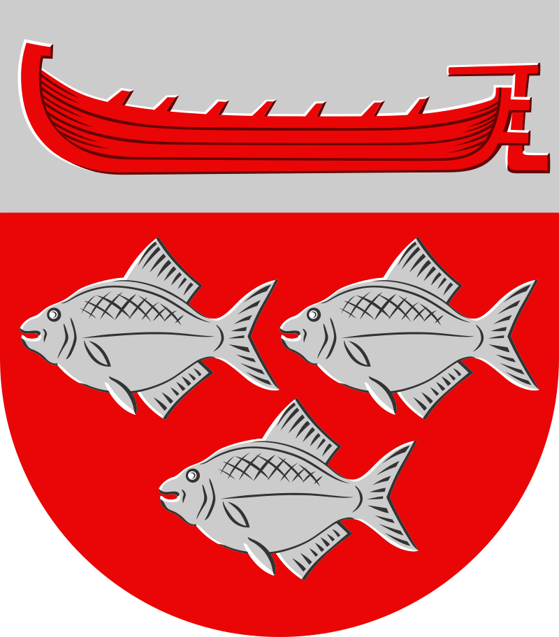

Ruovesi
Created January 15, 2023 Ruovesi on Suomen kunta, joka sijaitsee Pirkanmaan maakunnassa. Kunnassa asuu 4 152 ihmistä, ja sen pinta-ala on 950,17 km2, josta 173,18 km2 on vesistöjä. Väestötiheys on 5,34 asukasta/km2. Ruoveden naapurikunnat ovat Juupajoki, Mänttä-Vilppula, Orivesi, Tampere, Virrat ja Ylöjärvi. Entisiä naapurikuntia ovat Tampereeseen vuonna 1972 liitetty Teisko, Vilppulaan ja Virtoihin vuonna 1973 liitetty Pohjaslahti, Ylöjärveen vuonna 2009 liitetty Kuru sekä Mänttä-Vilppulaan vuonna 2009 yhdistetty Vilppula. Tampereen keskustaan on matkaa 73 km. Ruovesi erotettiin Suur-Pirkkalasta vuonna 1576. Myöhemmin Ruovedestä on erotettu Keuruu, Virrat, Ähtäri, Kuru, Vilppula ja Pohjaslahti. Ruovesi tunnettiin aiemmin seitsemän vientisahan pitäjänä. Kunnassa toimivat Pohjan Saha Oy (Jäminkipohja), Kovetun Saha Oy (Murole), Kotvio Oy (Kirkonkylä), Visuvesi Oy (Visuvesi), Väärinmajan Saha (Ylä-Vääri), Aimon Saha (Visuvesi) ja Toivo Lahtisen Saha (Mustajärvi). Sahateollisuudesta on jäljellä enää vain kaksi sahayritystä. Ruoveden teollisuusrakenne on perustunut vahvasti mekaaniseen metsäteollisuuteen koko 1900-luvun ajan. Nykyisin kunnan suurimmat työnantajat ovat Ruoveden kunta, Pihlavan Ikkuna Oy ja Sonoco Alcore. Ruovedellä sijaitsi turvapaikanhakijoiden vastaanottokeskus, joka aloitti toimintansa 4.5.2009 ja siirtyi Mänttä-Vilppulaan 2012.